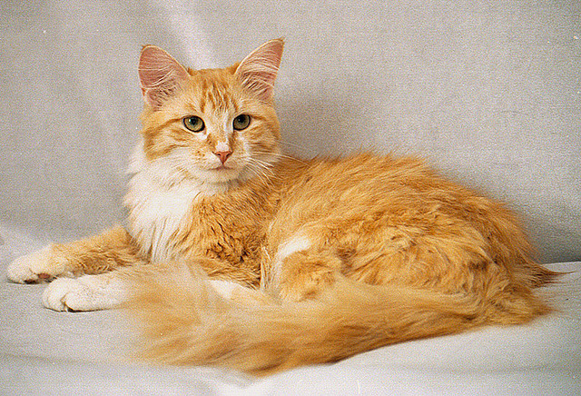

Kot Syberyjski
Pochodzenie
Koty syberyjskie uważa się za tzw. rasę naturalną, czyli powstałą przede wszystkim na drodze selekcji naturalnej. Rasę tę ukształtowały surowe warunki klimatyczne panujące na północnych obszarach Rosji. Kwestią sporna jest natomiast to, skąd się tam wzięły przodkowie kotów syberyjskich.
Charakter i zachowanie
Charakterystyczną cechą kota syberyjskiego jest to, że mimo udomowienia i potrzeby bliskiego kontaktu z człowiekiem wciąż pozostała w nim odrobina dzikości. Jest bardzo samodzielny i choć - jak wszystkie koty - nie lubi przymusu, to łatwo można go wychować. W młodym wieku potrzebuje dużo uwagi i poświęcenia mu czasu.
Pielęgnacja
Posiadający niespożytą energię życiową, szybki i aktywny kot syberyjski jest znakomicie rozwinięty fizycznie. Prawidłowo żywiony wyróżnia się błyszczącą szatą. Sierść nie wymaga specjalnej pielęgnacji, wystarczy trochę przeczesać ją szczotką ras na tydzień (trochę częściej w okresie linienia. Koty syberyjskie są z natury bardzo czyste – jest to jedna z najpoważniejszych zalet w hodowli domowej.